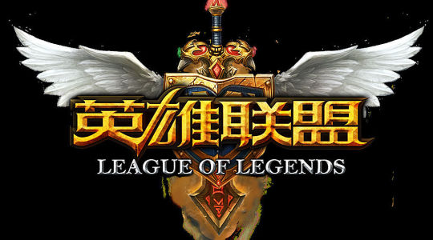
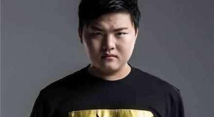
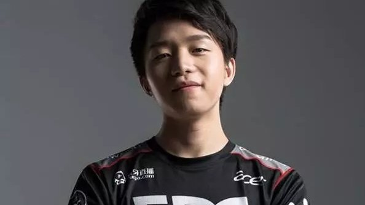
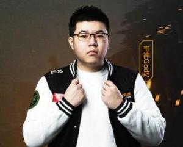

|  | |
 简自豪，网络ID：Uzi，1997年3月29日出生于湖北省宜昌市，是游戏《英雄联盟》中国区的电竞职业选手，原SH皇族电子竞技俱乐部ADC选手，现效力RNG战队并担任队内ADC一职。 2013年Uzi第一次进入全球总决赛，在预选赛上使用暗夜猎手VN在比赛一战封神，却在决赛惜败SKT获得S3英雄联盟世界总决赛亚军。2014年再次进入S系列比赛获得S4英雄联盟世界总决赛亚军。2015年S5赛季初加入OMG无缘世界总决赛。春季赛结束后，在2016年夏季转会期时转会到RNG。 2018年5月20日，MSI季中邀请赛，皇族3-1战胜KZ，Uzi获得6年来的第一个世界级冠军，实现了他的又一个梦想。 |
 《英雄联盟》职业选手明凯的ID之一，S7赛季明凯改换了原ID“Clearlove”为“Clearlove7”。 [1] 中国LPL联赛始于2013年，在此之前厂长就已经辗转蓝BiuBiu，Phoenix，WE等队伍，而他被人熟知也是从WE开始，到今年已经超过4年之久。要说到LPL第一人，厂长当仁不让，而他只有一个梦想，就是冠军，在连续两次世界赛折戟八强之后，很多人猜测厂长会不会退役，但他坚定的说：我会打到我打不动为止。 2017年，他重新出发，并改ID为Clearlove7，变成了一个“新人”打野；作为替补，他只有为数不多的几次上场， Clearlove7为了让自己能够适应大量的训练，还在坚持锻炼，让自己的身体能够得到更好的状态，总而言之一切都是为了再度上场而做出的万全准备 |
李相赫，ID：faker，绰号“大魔王”，司职《英雄联盟》中单，1996年5月7日出生于韩国，是韩国电子竞技俱乐部SKT T1英雄联盟分部的队员之一。 2013年2月Faker被招入SK Telecom #2队，该队伍于2013年6月更名为SK Telecom T1 K队，2015年SK Telecom T1 K与SK Telecom T1 S队伍合并为SKT T1。 2013年Faker带领SKT T1 K队获得S3全球总决赛的冠军，在2015年英雄联盟季中邀请赛中队伍以2：3败给EDG获得亚军，在S5全球总决赛上与队友一起以15胜1败的战绩再次夺得了冠军。2016英雄联盟全球总决赛上，队伍战胜SSG获得冠军。 |
 韦朕，1997年7月16日出生于湖南长沙，游戏ID：GodV，前中国《英雄联盟》电子竞技职业选手，前LGD战队中单，现《绝地求生》职业选手，4AM战队自由人 。 2012年9月，韦朕加入VG战队。2014年5月，转会加盟LGD战队。2015年4月，帮助LGD战队获得LPL春季赛亚军；同年8月，帮助LGD战队获得LPL夏季赛冠军。 2017年11月，韦朕带领4AM在G-Star绝地求生亚洲邀请赛获得亚军。[2] 2018年2月，韦朕带领4AM在SLI绝地求生世界赛2连吃鸡总成绩第八（中国于世界赛最好成绩）。 |
.jpg)